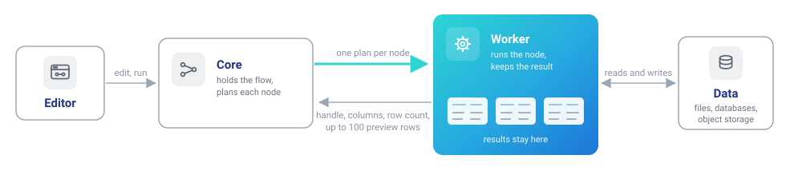
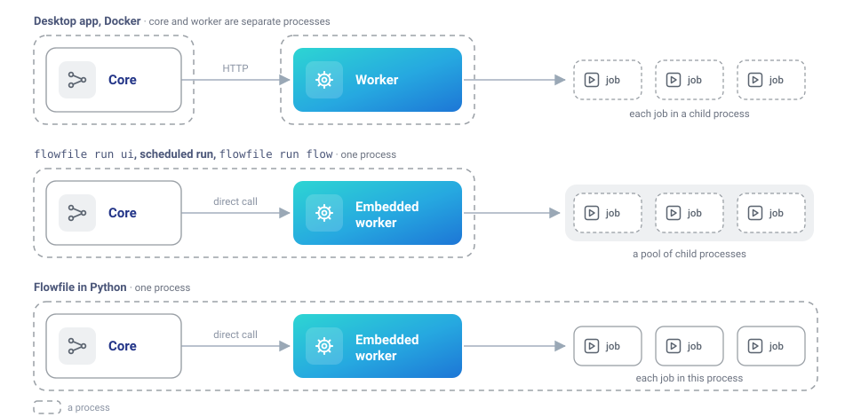
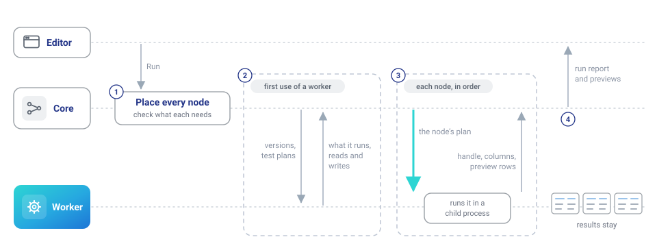
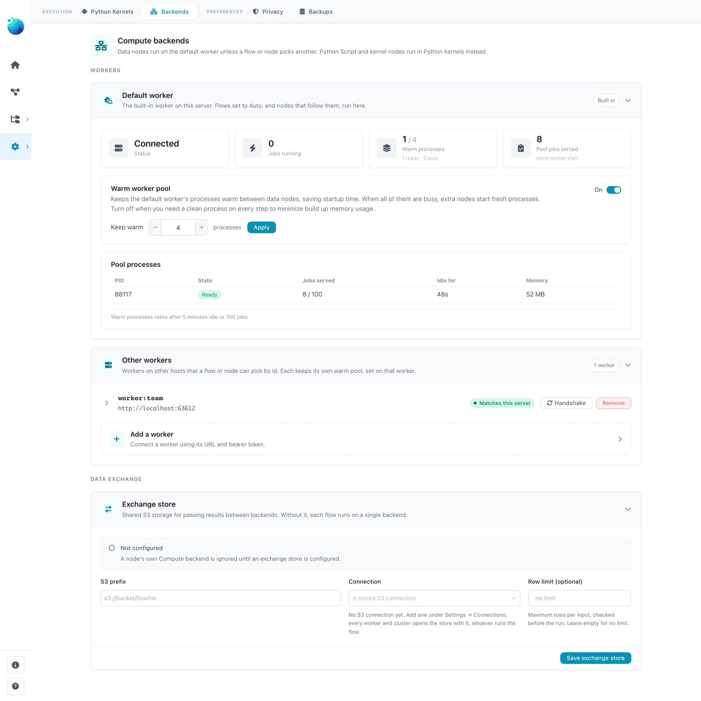
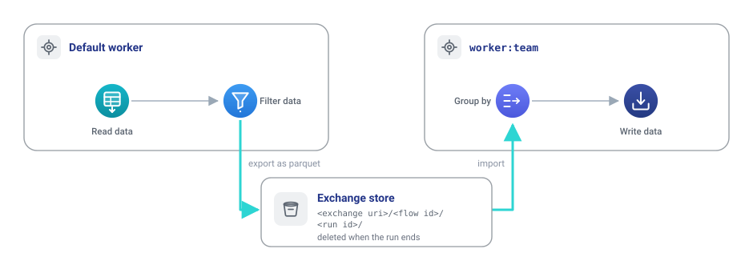
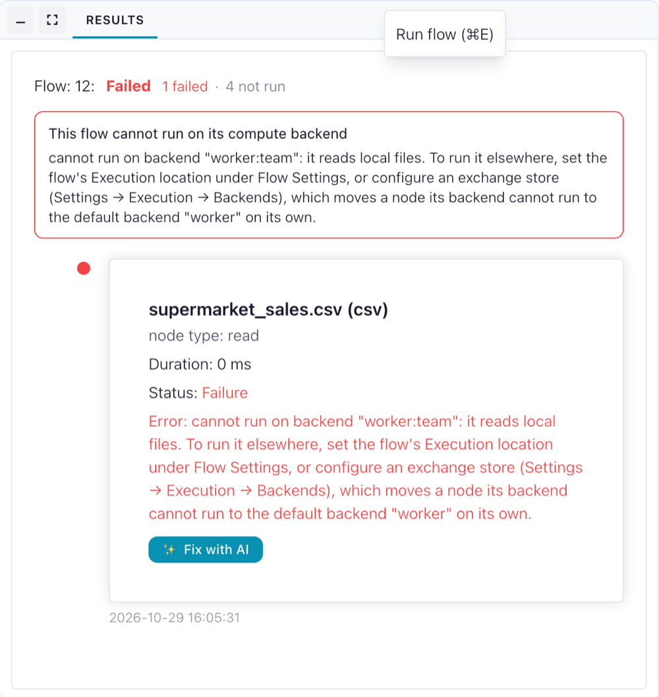

Where flows run
This page explains which process does the work when a flow runs, where results are kept, and what the Execution location, Compute backend and Backends settings change. It covers the desktop app, Docker, the Python package and headless runs. To add a worker on another host, see Remote workers; for the code, see How compute works.
Core plans, a worker computes
Flowfile has two roles:
- Core is the server behind the editor. It holds the open flows, decides the order nodes run in and predicts each node's columns.
- A worker reads the data, runs each node and keeps its result.
For every node, core sends the worker a Polars plan. The worker answers with a handle to the result, its columns, its row count when known, and its first 100 rows for the preview. Core never holds a whole dataset, and a result stays on the worker that computed it: the next node's plan reads it there.

Which process computes
The worker is the only compute. What differs is where it lives:
| How Flowfile runs | Where its flows compute |
|---|---|
| Desktop app | A worker process the app starts beside core |
Docker (docker compose) |
The flowfile-worker container |
flowfile run ui (Python package) |
A worker inside core's process, its jobs in a pool of child processes |
A scheduled run, flowfile run flow |
A worker inside the run's own process, its jobs in child processes, unless a backend is named (below) |
Flowfile in Python (import flowfile) |
A worker inside the Python process |

Everywhere but Python, each job runs in a child process:
- A job that runs out of memory takes down only its child and fails its node; core, the editor and the run keep going.
- Cancel stops the child. Cancel Run stops a scheduled run with its children.
- A job that runs past the worker's task time limit,
FLOWFILE_WORKER_TASK_TIMEOUTin the worker's environment (3600 seconds by default,0for none), is stopped and fails its node.
The worker keeps up to 4 of these child processes warm by default and hands each job to a free one, saving the process start: about 0.2 seconds on macOS, 0.4 seconds or more on Windows. A job that finds them all busy starts a fresh process, and some jobs always do: a custom node, Polars code, a fuzzy match, training or applying a model, a database, Kafka, REST API or Google Analytics read, and a Read data node over Excel, Avro, an Arrow IPC stream or a CSV that is not UTF-8.
Administrators set the size under Warm worker pool on the Default worker card of Settings → Execution → Backends (pictured under The settings), or switch the pool off so every job starts a fresh process. A new size applies at once and is kept across restarts; when FLOWFILE_WORKER_POOL_SIZE is set in the worker's environment, that value takes over again at the next start. A worker added as worker:<name> keeps its own pool, which the card does not size: set the variable in that worker's environment.
Scheduled runs compute in their own process. In Docker that is core's container, with its memory and CPU, not the worker container's; child processes do not change that. Such a run keeps one child warm rather than the size set on the Backends page, unless FLOWFILE_WORKER_POOL_SIZE is set in its environment. To send headless runs to a worker, name it, in this order of precedence:
--backend <id>onflowfile run flow(Headless runs);- the flow's Execution location, set to the worker's id;
FLOWFILE_COMPUTE_BACKENDin core's environment (workerfor the worker container, or aworker:<name>id), which every scheduled run inherits.
A named worker that cannot be reached fails the run; the run does not fall back to its own process.
What happens when a flow runs

- Core places every node. It picks the worker for each node and checks that the worker reads and writes the storage the node uses, has the plugins its expressions need, and runs that kind of node. If a node cannot run there, the run stops before any node starts (Before a run starts).
- Core checks each worker once. On first use it compares versions and runs a few tiny test plans. A worker on another Polars version is refused whole; one missing a plugin is refused only the nodes that use it. Handshake on the Backends page runs the same check on demand.
- The nodes run in order. In Development mode each answer carries up to 100 preview rows; Performance mode takes no preview.
- The results stay on the worker until they are released (When results are released).
The worker decides per node whether to store the result or keep only the plan. It stores the result when the node has Cache Results on, and when a join, group by, sort, pivot or other step that reshapes rows is previewed. Filters and column changes stay plans, so a chain of them runs as one Polars query when the next node reads it.
The settings
| Setting | Where | What it changes |
|---|---|---|
| Execution location | Flow Settings | The worker the whole flow runs on: Auto (default worker), which is the worker that comes with Flowfile, or a worker an administrator added, by its id worker:<name>. |
| Compute backend | a node's General Settings | The worker this one node runs on. Used only with an exchange store (below); otherwise every node follows the flow. |
| Backends | Settings → Execution → Backends (administrators) | Size the default worker's Warm worker pool, add and remove workers, check one with Handshake, mark one Sees this server's files, and set the Exchange store. |

Each worker shows the result of its last check, worded slightly differently in the pickers and on the Backends page:
| In the pickers | On the Backends page | Meaning |
|---|---|---|
| Compatible | Matches this server | Matches core on everything compared |
| Accepted with differences | Accepted with differences | Differs only where it does not matter, e.g. the Python patch release |
| Limited · N unavailable | Accepted with limitations | Lacks something some nodes need; those nodes are refused |
| Not accepted | Not accepted by this server | Refused whole, e.g. another Polars version; runs nothing |
| Handshake failed | Handshake failed | Core could not reach it |
| Not checked | Not checked | No result: not checked since core started, or cleared after a call could not reach it |
Building flows shows both pickers.
Nodes on different workers
Without an exchange store, every node of a run goes to the flow's worker. An exchange store is an S3 location, set under Exchange store on the Backends page, through which results cross from one worker to another. With one, each node runs on its own Compute backend, and a node left on Auto (the flow's backend) follows the flow.

With a store configured:
- Where an edge joins nodes on different workers, the upstream result is written as parquet under
<exchange uri>/<flow id>/<run id>/, and the downstream node reads it into its own worker. - Core deletes the run's folder when the run ends, whether it succeeded or failed. The canvas marks the edges that crossed on the last run.
- A node whose worker cannot run it moves to the default worker, with a warning in the flow log and a line on the run report naming both workers. Without a store, such a node stops the run (Before a run starts).
Nodes on several backends has the store's settings, its row limit and the cases that still refuse a run.
Before a run starts
Core checks every node against its worker before any node runs. A node that does not fit stops the run, and its row on the run report reads cannot run on backend "<id>": <reason>, followed by the setting that moves it.

The common reasons:
| Reason | Cause and fix |
|---|---|
it reads local files (or writes) |
A local path, or a file uploaded through the File Manager, on a worker that does not see core's files. Use object storage or a URL, or a worker marked Sees this server's files. |
namespace "<name>" is on local disk, not object storage |
A catalog whose tables live on core's disk, on a worker on another host. |
it runs on a notebook kernel, which reads its inputs from core's disk |
A Python Script node, or a custom node that runs on a kernel, on a worker on another host. |
it needs <plugin> (not installed), (version <x>, core has <y>) or (fails to load) |
The worker lacks a plugin the node uses, has another version, or cannot load it. The Backends page shows the details. |
its plan may carry a Python function, which this backend cannot run |
A formula node on a worker where core's Python functions do not run, because its Python differs from core's. |
Backend "<id>" does not match core (…) |
The worker runs another Polars version or worker contract. Upgrade one side. |
A worker that cannot be reached is not refused up front: its nodes fail when they run, with a message ending Is backend "<id>" running? Start it, or check the Backends page. Flowfile never runs such a node elsewhere and never treats an unreachable worker as a missing cache.
When results are released
A node releases all the results it made:
- when it runs again with other settings or on another worker;
- when it is deleted or its flow is closed;
- when it fails after storing part of its outputs.
A published API call and a headless run release everything when they end. As a backstop for a core that stopped without closing its flows, a worker forgets every result older than 24 hours the next time it receives work.
Core keeps the handles in memory, so a cached result does not survive a restart of core, and a flow moved to another worker runs again from its sources there.
Switching the protocol off
FLOWFILE_COMPUTE_PROTOCOL=0 in core's environment makes core use the worker's task routes instead of its /v1 routes, and core then opens the worker's result files itself. That works only when core and the worker share a disk, so a worker on another host needs the protocol on, which is the default.